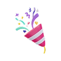

Этот тест покажет ваш управленческий стиль и сильные стороны в работе с командой
Ответьте на 7 вопросов — результат займет меньше 2 минут
Этот тест покажет ваш управленческий стиль и сильные стороны в работе с командой
Загрузка...
Этот тест покажет ваш управленческий стиль и сильные стороны в работе с командой

Вы прошли тест!
Получите результаты на почту
Этот тест покажет ваш управленческий стиль и сильные стороны в работе с командой
Отправили результат
на вашу почту!